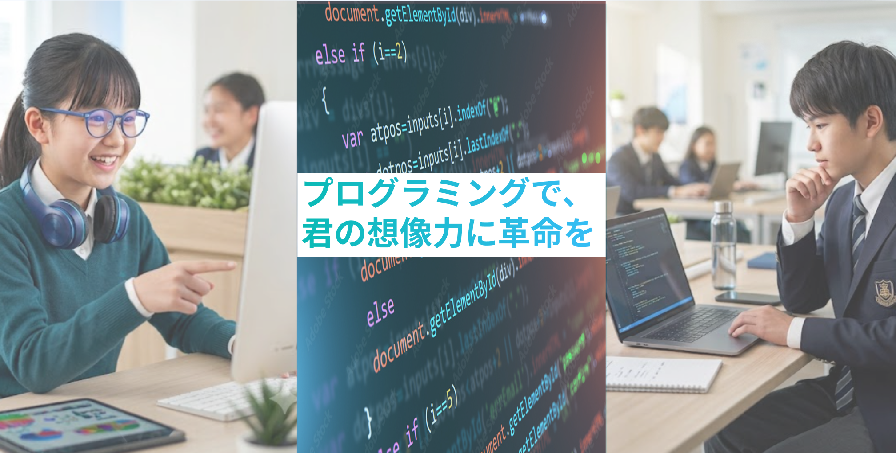

バイブコーディング
AIにこんな機能が欲しいと言葉で伝えるだけ、プログラムが目の前で次々と組み上がります。プログラミングの文法ではなく、何を作りたいかというアイデアの力でアプリを作り上げる、最新の開発スタイルを体験します。
所要時間：60分
知識ゼロから「作る楽しさ」を体感する、プログラミング講座
AIにこんな機能が欲しいと言葉で伝えるだけ、プログラムが目の前で次々と組み上がります。プログラミングの文法ではなく、何を作りたいかというアイデアの力でアプリを作り上げる、最新の開発スタイルを体験します。
所要時間：60分自分だけの自己紹介や趣味のページ作りに挑戦！Webページの仕組みを学び、HTML・CSS・JSという3つの言語を知った上で、実際にHTML・CSSを書き換えて思い通りの見た目に変えていく楽しさを体験します。
所要時間：60分ゲームやアプリ、AIなど幅広く利用されるPythonをわずか2日でマスターします。作りながら学ぶことができるので、楽しみながらマスターすることができます。
所要時間：120分×2コマ×2日間プログラミング学びたいけど何から始めたらいいのかわからない…
どのプログラミング言語を学んだらいいのかわからない…
プログラミングについて相談できる相手がいない…
そもそもプログラミングってなに？
BeEngineerでは様々な悩みを解決してくれます！
講師は全員、500時間以上のプログラミング研修をクリアし、講師としての指導スキルを獲得した京大生中心のエンジニアです。京大発のITベンチャーで培われた実践的な最新のプログラミング知識を組み込んだ独自のカリキュラムを用いているので、社会で通用するプログラミングスキルを身に着けることができます。
BeEnではコードを書く技術やエンジニアリングに必須のツールを使う技術、ユーザーのことを考えた設計技術などの実践的なスキルを獲得することができます。実践的なITスキルから将来日本をリードするエンジニアを輩出することを目標にしています。
自らコードを書く中で目的を達成するための手順を筋道立てて考える演習を日常的に行います。順序正しくコードを構築し、エラーの原因を突き止めて解決することを通して論理的に考える習慣を身につけます。このような能力は文系や理系問わない普遍的な課題解決能力です。
プログラミングができる中高生がアプリ開発に取り組むことで自分のアイデアを現実化することができます。この過程を通して自分が思い描くものを表現することができるので自己表現力の向上につながり、このような力の分野に関わらず汎用的な成果につながります。
中学3年生 男子
生徒
プログラミングの美しさや楽しさを身をもって体験できたことによって、いろいろな物事を真正面からきちんと考えて向き合えるようになりました。また、保護型の授業なので、通学より理解がしやすいです。
高校1年生 女子
生徒
プログラミングの基本的な知識が身につき、自らWebサイトを作れるようになりました。毎回の授業で新しくできることが増えてきており、日に見えて成果がわかることが楽しいです。
高校2年生 男子
保護者
本人は体験してやってみたいと思っていましたが、やり切れるのかが心配でしたが、実際通い始めると程よく気楽で楽しかったと笑顔で帰ってくるので安心しました。
中学2年生 女子
生徒
Webページ作りの授業がとても楽しく、コードで思い通りの見た目を作れた瞬間はとても嬉しかったです。自分で考えながら手を動かすようなWebページ作りが得意になりました。授業を通してタイピングも早くなりました。
文化祭の出店情報やタイムテーブルをまとめて記載し、実際に学校の生徒全体が活用するWebサイトとして運用してくれました。
時間割や集会などクラスメイトが情報を確認できるページとして作成し、担任の先生と連携しながら運用してくれています。
漢字や作成したタイピングゲームをアレンジして、自分だけのタイピングゲームを作ってくれました。
住所：〒606-8301
京都府京都市左京区吉田泉殿町1-34
ダイショウ吉万通ビル１・2F
アクセス：出町柳駅から徒歩10分（駐輪場あり）
はい、大丈夫です。ほとんどの生徒がプログラミング未経験からスタートしています。基礎から丁寧にサポートしますのでご安心ください。
教室での受講であれば貸出用パソコンをご用意していますので、お持ちでない場合もご参加いただけます。
無料体験は60分程度を予定しています。内容によって多少前後する場合があります。
中学生・高校生を対象としています。学年に応じて内容を調整しますのでお気軽にご相談ください。
校舎によってはオンライン受講にも対応しています。詳しくはお申し込み時にご相談ください。
体験後も学習相談や講座選びのサポートを行っておりますので、お気軽にお問い合わせください。